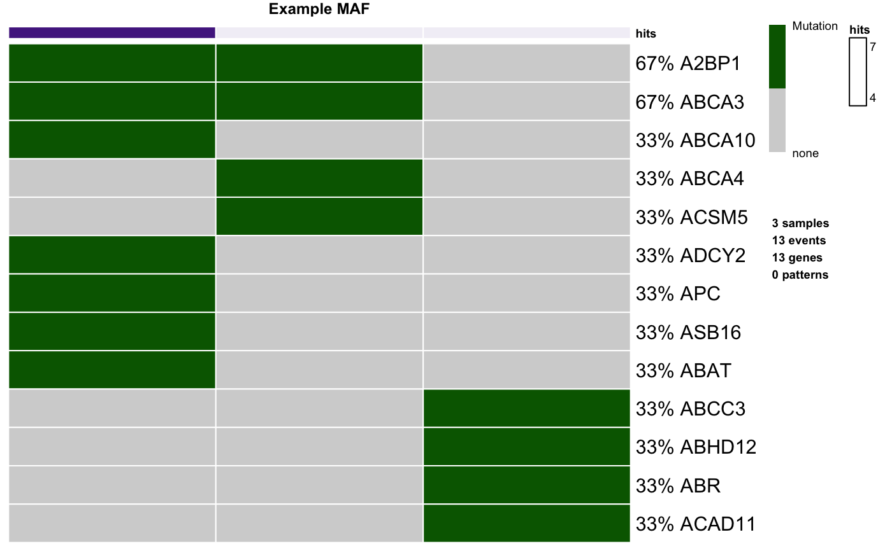

Import mutation profiles from a Manual Annotation Format (MAF) file. All mutations are aggregated as a
unique event type labeled "Mutation" and assigned a color according to the default of function
import.genotypes. If this is a TCGA MAF file check for multiple samples per patient is performed
and a warning is raised if these occurr. Customized MAF files can be imported as well provided that
they have columns Hugo_Symbol, Tumor_Sample_Barcode and Variant_Classification.
Custom filters are possible (via filter.fun) to avoid loading the full MAF data. For details and examples
regarding the loading functions provided by the package we refer to the Vignette Section 3.
import.MAF(
file,
sep = "\t",
is.TCGA = TRUE,
filter.fun = NULL,
to.TRONCO = TRUE,
irregular = FALSE,
paste.to.Hugo_Symbol = NULL,
merge.mutation.types = TRUE,
silent = FALSE
)MAF filename
MAF separator, default \'\t\'
TRUE if this MAF is from TCGA; thus its sample codenames can be interpreted
A filter function applied to each row. This is expected to return TRUE/FALSE.
If FALSE returns a dataframe with MAF data, not a TRONCO object
If TRUE seeks only for columns Hugo_Symbol, Tumor_Sample_Barcode and Variant_Classification
If a list of column names, this will be pasted each Hugo_Symbol to yield names such as PHC2.chr1.33116215.33116215
If TRUE, all mutations are considered equivalent, regardless of their Variant_Classification value. Otherwise no.
A parameter to disable/enable verbose messages.
A TRONCO compliant representation of the input MAF
data(maf)
mutations = import.MAF(maf)
#> *** Importing from dataframe
#> Loading MAF dataframe ...DONE
#> *** Mutations names: using Hugo_Symbol
#> *** Using full MAF: #entries 16
#> *** MAF report: TCGA=TRUE
#> Type of annotated mutations:
#> [1] Missense_Mutation Silent Nonsense_Mutation Frame_Shift_Ins
#> Levels: Frame_Shift_Ins Missense_Mutation Nonsense_Mutation Silent
#> *** [merge.mutation.types = T] Mutations will be merged and annotated as 'Mutation'
#> Number of samples: 3
#> [TCGA = TRUE] Number of TCGA patients: 3
#> Number of annotated mutations: 16
#> Mutations annotated with "Valid" flag (%): 88
#> Number of genes (Hugo_Symbol): 13
#> Starting conversion from MAF to 0/1 mutation profiles (1 = mutation) :3 x 13
#> ................
#> Starting conversion from MAF to TRONCO data type.
mutations = annotate.description(mutations, 'Example MAF')
mutations = TCGA.shorten.barcodes(mutations)
oncoprint(mutations)
#> *** Oncoprint for "Example MAF"
#> with attributes: stage = FALSE, hits = TRUE
#> Sorting samples ordering to enhance exclusivity patterns.
#> Setting automatic row font (exponential scaling): 11.6
